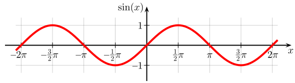
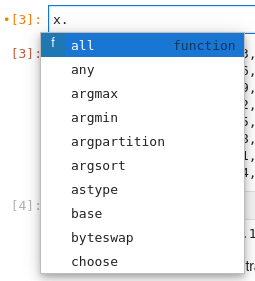
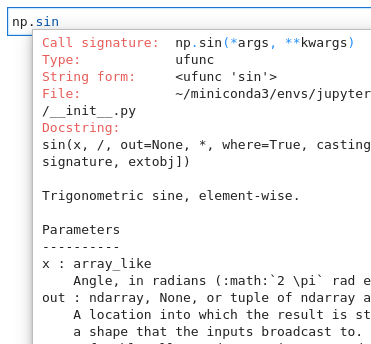

Demostración del cuaderno (notebook) Jupyter
Contents
Demostración del cuaderno (notebook) Jupyter#
Esta breve demostración muestra varios de los elementos y capacidades más importantes de los cuadernos Jupyter.
Para ayudar a navegar el cuaderno, este cuaderno divide el contenido (las celdas) en secciones por medio de encabezados en Markdown.
Importar bibliotecas#
Aquí importamos las bibliotecas o paquetes que usaremos en este cuadernos.
Una celda de código puede incluir múltiples declaraciones.
import numpy as np
import matplotlib.pyplot as plt
Definir las variables x e y#
Definimos las variables x e y, donde y es el seno de x. Podemos mostrar esta relación en Markdown usando la sintaxis de la biblioteca MathJax, que viene integrada en Jupyter:
\( y = seno(x) \)
Utilizaremos la biblioteca numpy de computación científica en arreglos (arrays) para definir las dos variables. Un arreglo numpy es similar a la lista normal de Python, pero almacena y opera con datos homogéneos, del mismo tipo.
Las variables creadas en una celda quedan disponibles a las celdas siguientes.
Aquí, x es creado como un rango entre 0 y 10, con paso (step) de 0.1.
x = np.arange(0, 10, 0.1)
y = np.sin(x)
Podemos examinar los valores de estos arreglos fácilmente, ya sea con una declaración de la variable o utilizando la función print.
x
array([0. , 0.1, 0.2, 0.3, 0.4, 0.5, 0.6, 0.7, 0.8, 0.9, 1. , 1.1, 1.2,
1.3, 1.4, 1.5, 1.6, 1.7, 1.8, 1.9, 2. , 2.1, 2.2, 2.3, 2.4, 2.5,
2.6, 2.7, 2.8, 2.9, 3. , 3.1, 3.2, 3.3, 3.4, 3.5, 3.6, 3.7, 3.8,
3.9, 4. , 4.1, 4.2, 4.3, 4.4, 4.5, 4.6, 4.7, 4.8, 4.9, 5. , 5.1,
5.2, 5.3, 5.4, 5.5, 5.6, 5.7, 5.8, 5.9, 6. , 6.1, 6.2, 6.3, 6.4,
6.5, 6.6, 6.7, 6.8, 6.9, 7. , 7.1, 7.2, 7.3, 7.4, 7.5, 7.6, 7.7,
7.8, 7.9, 8. , 8.1, 8.2, 8.3, 8.4, 8.5, 8.6, 8.7, 8.8, 8.9, 9. ,
9.1, 9.2, 9.3, 9.4, 9.5, 9.6, 9.7, 9.8, 9.9])
print(y[:3])
[0. 0.09983342 0.19866933]
Markdown permite crear y mostrar información en tablas. Este código Markdown con los primeros valores de nuestra ecuación:
| x | seno(x) |
|---|---|
|0.0|0.0|
|0.1|0.09983342|
|0.2|0.19866933|
|...|...|
produce esta tabla formateada:
x |
seno(x) |
|---|---|
0.0 |
0.0 |
0.1 |
0.09983342 |
0.2 |
0.19866933 |
… |
… |
Graficar los datos#
Finalmente, utilizamos la biblioteca matplotlib para gráficar los datos, personalizando el color, marcador, tamaño del marcador, y etiquetas de los ejes.
La gráfica es presentada directamente en el cuaderno, como un resultado.
plt.figure(figsize=(5,2))
plt.plot(x, y, color='green', marker='o', markersize=3)
plt.xlabel('Ángulo (radián)')
plt.ylabel('seno(x)')
plt.show()
Con Markdown podemos comparar ese gráfico a uno equivalente tomado de Wikipedia:

Trucos útiles#
Comandos mágicos#
Jupyter suministra unos comandos especiales llamados «comandos mágicos», ue consisten en funciones adicionales muy útiles para resolver necesidades comunes y repetitivas. Hay dos tipos de comandos mágicos: los comandos que comienzan con % que afectan a una única línea de una celda (donde se inserta el comando) y aquellos comandos que comienzan con %% y se aplican a toda la celda.
Por ejemplo, el comando mágico %whos muestra todas las variables que han sido definidas en el cuaderno, junto con alguna información sobre ellas:
%whos
Variable Type Data/Info
-------------------------------
np module <module 'numpy' from '/ho<...>kages/numpy/__init__.py'>
plt module <module 'matplotlib.pyplo<...>es/matplotlib/pyplot.py'>
x ndarray 100: 100 elems, type `float64`, 800 bytes
y ndarray 100: 100 elems, type `float64`, 800 bytes
Autocompletación#
Las funciones, objetos y variables que utilizamos comúnmente contienen muchos métodos o propiedades. El cuaderno Jupyter suministra un mecanismo de autocompletado, accedido presionando la tecla Tab luego del nombre de la variable u objecto (o después del punto que divide un objecto y sus métodos o propiedades). Esto nos mostrará un menú desplegable con todas las sugerencias, por ejemplo, para nuestra variable x:

Descripción de funciones o métodos#
Similar al mecanismo de autocompletado, presionando la secuencia de teclas Shift + Tab luego del nombre de una función o método nos revela su texto descriptivo en una ventana desplegable. Por ejemplo, para la función np.sin que hemos utilizado:
